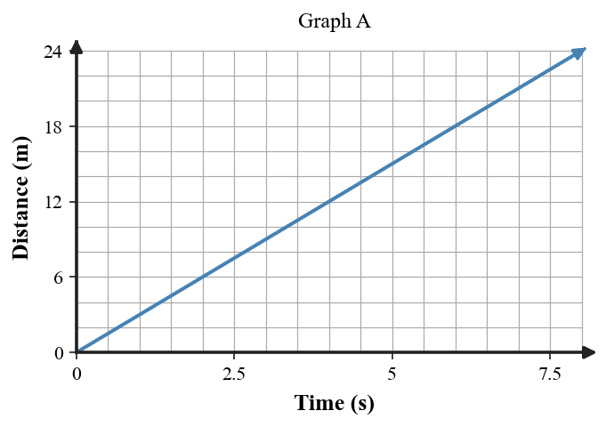
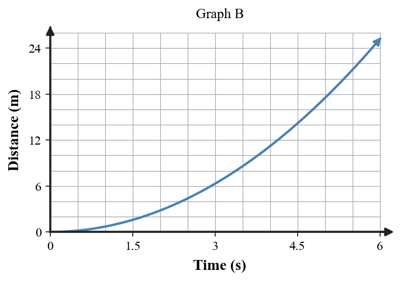
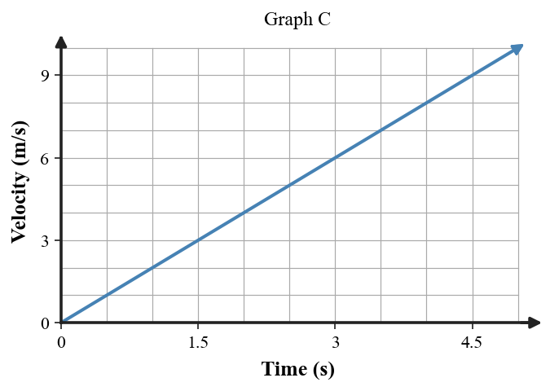
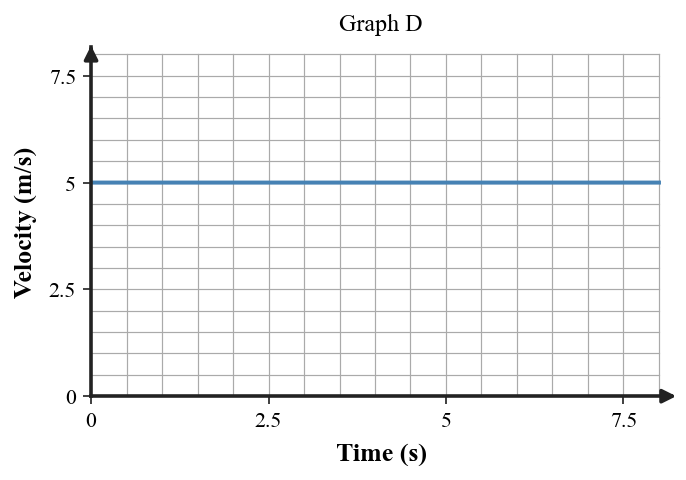
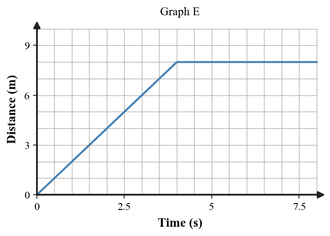
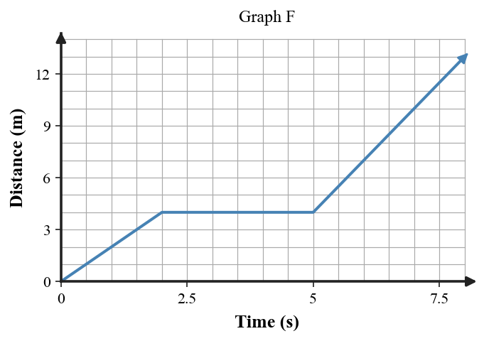
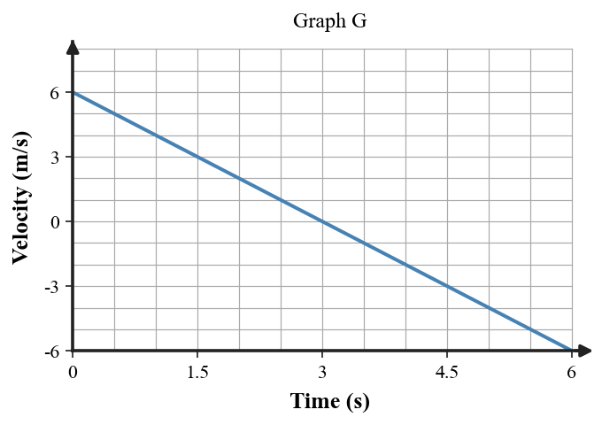
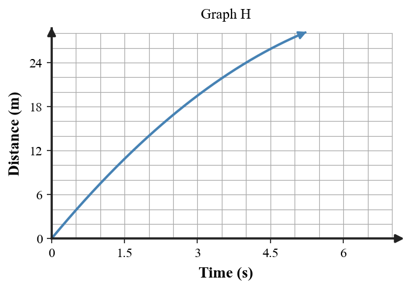

Graph A shows distance versus time. Choose the description that best matches it: (1) equal distance each second, (2) speeding up, or (3) stopped. Justify with one graph feature.

Match Graph B to the best description: constant speed, speeding up, or slowing down. Use the changing slope as evidence.

Graph C shows velocity versus time. Select: constant velocity, constant positive acceleration, or object at rest. Explain one feature that supports the match.

Use Graph D to choose the matching story.

Justify your choice.
A distance-time graph is shown.

Which description fits best: moves, stops, then remains stopped; speeds up continuously; or moves backward? Explain the flat part of the graph.
Graph F is distance versus time.

Describe the object’s motion during the first, middle, and final parts of the graph.
Use the velocity-time graph.

At what part of the graph does the object change direction? Explain using the sign of velocity.
Graph H shows distance traveled versus time.

Choose speeding up, slowing down, or constant speed, and justify using the slope.